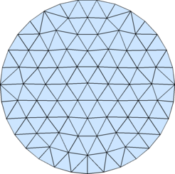

DistMesh - A Simple Mesh Generator in MATLABNews (Mar 11, 2012)I have not been maintaining/updating the distmesh code since I wrote it, but by popular request I have now posted a new version. The main differences and new features are:
DescriptionDistMesh is a simple MATLAB code for generation of unstructured triangular and tetrahedral meshes. It was developed by Per-Olof Persson (now at UC Berkeley) and Gilbert Strang in the Department of Mathematics at MIT. A detailed description of the program is provided in our SIAM Review paper, see documentation below. One reason that the code is short and simple is that the geometries are specified by Signed Distance Functions. These give the shortest distance from any point in space to the boundary of the domain. The sign is negative inside the region and positive outside. A simple example is the unit circle in 2-D, which has the distance function d=r-1, where r is the distance from the origin. For more complicated geometries the distance function can be computed by interpolation between values on a grid, a common representation for level set methods. For the actual mesh generation, DistMesh uses the Delaunay triangulation routine in MATLAB and tries to optimize the node locations by a force-based smoothing procedure. The topology is regularly updated by Delaunay. The boundary points are only allowed to move tangentially to the boundary by projections using the distance function. This iterative procedure typically results in very well-shaped meshes. Our aim with this code is simplicity, so that everyone can understand the code and modify it according to their needs. The code is not entirely robust (that is, it might not terminate and return a well-shaped mesh), and it is relatively slow. However, our current research shows that these issues can be resolved in an optimized C++ code, and we believe our simple MATLAB code is important for demonstration of the underlying principles. To use the code, simply download it from below and run it from MATLAB. For a quick demonstration, type "meshdemo2d" or "meshdemond". For more details see the documentation. DownloadDownload the archive below and unpack. Add this directory to your MATLAB path, or make it the current directory. The code contains some C++ files, and binaries for 32/64-bit Windows, 64-bit Mac OS X, and 64-bit linux are provided, as well as the source code.
DistMesh is distributed under the GNU GPL; see the License and Copyright notice for more information. Documentation
GalleryExamples
% Example: (Uniform Mesh on Unit Circle)
fd=@(p) sqrt(sum(p.^2,2))-1;
[p,t]=distmesh2d(fd,@huniform,0.2,[-1,-1;1,1],[]);

% Example: (Rectangle with circular hole, refined at circle boundary)
fd=@(p) ddiff(drectangle(p,-1,1,-1,1),dcircle(p,0,0,0.5));
fh=@(p) 0.05+0.3*dcircle(p,0,0,0.5);
[p,t]=distmesh2d(fd,fh,0.05,[-1,-1;1,1],[-1,-1;-1,1;1,-1;1,1]);
% Example: (Polygon)
pv=[-0.4 -0.5;0.4 -0.2;0.4 -0.7;1.5 -0.4;0.9 0.1;
1.6 0.8;0.5 0.5;0.2 1;0.1 0.4;-0.7 0.7;-0.4 -0.5];
[p,t]=distmesh2d(@dpoly,@huniform,0.1,[-1,-1; 2,1],pv,pv);
% Example: (Ellipse)
fd=@(p) p(:,1).^2/2^2+p(:,2).^2/1^2-1;
[p,t]=distmesh2d(fd,@huniform,0.2,[-2,-1;2,1],[]);
% Example: (Square, with size function point and line sources)
fd=@(p) drectangle(p,0,1,0,1);
fh=@(p) min(min(0.01+0.3*abs(dcircle(p,0,0,0)), ...
0.025+0.3*abs(dpoly(p,[0.3,0.7; 0.7,0.5]))),0.15);
[p,t]=distmesh2d(fd,fh,0.01,[0,0;1,1],[0,0;1,0;0,1;1,1]);
% Example: (NACA0012 airfoil)
hlead=0.01; htrail=0.04; hmax=2; circx=2; circr=4;
a=.12/.2*[0.2969,-0.1260,-0.3516,0.2843,-0.1036];
fd=@(p) ddiff(dcircle(p,circx,0,circr),(abs(p(:,2))-polyval([a(5:-1:2),0],p(:,1))).^2-a(1)^2*p(:,1));
fh=@(p) min(min(hlead+0.3*dcircle(p,0,0,0),htrail+0.3*dcircle(p,1,0,0)),hmax);
fixx=1-htrail*cumsum(1.3.^(0:4)');
fixy=a(1)*sqrt(fixx)+polyval([a(5:-1:2),0],fixx);
fix=[[circx+[-1,1,0,0]*circr; 0,0,circr*[-1,1]]'; 0,0; 1,0; fixx,fixy; fixx,-fixy];
box=[circx-circr,-circr; circx+circr,circr];
h0=min([hlead,htrail,hmax]);
[p,t]=distmesh2d(fd,fh,h0,box,fix);
% Example: (Uniform Mesh on Unit Sphere)
fd=@(p) dsphere(p,0,0,0,1);
[p,t]=distmeshsurface(fd,@huniform,0.2,1.1*[-1,-1,-1;1,1,1]);
% Example: (Graded Mesh on Unit Sphere)
fd=@(p) dsphere(p,0,0,0,1);
fh=@(p) 0.05+0.5*dsphere(p,0,0,1,0);
[p,t]=distmeshsurface(fd,fh,0.15,1.1*[-1,-1,-1;1,1,1]);
% Example: (Uniform Mesh on Torus)
fd=@(p) (sum(p.^2,2)+.8^2-.2^2).^2-4*.8^2*(p(:,1).^2+p(:,2).^2);
[p,t]=distmeshsurface(fd,@huniform,0.1,[-1.1,-1.1,-.25;1.1,1.1,.25]);
% Example: (Uniform Mesh on Ellipsoid)
fd=@(p) p(:,1).^2/4+p(:,2).^2/1+p(:,3).^2/1.5^2-1;
[p,t]=distmeshsurface(fd,@huniform,0.2,[-2.1,-1.1,-1.6; 2.1,1.1,1.6]);
Per-Olof Persson Department of Mathematics, UC Berkeley persson@berkeley.edu |